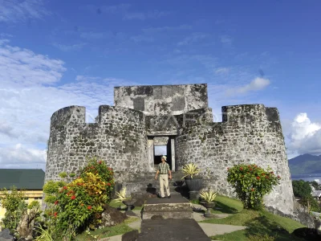

.jpeg)
.jpeg)
Seperti kebanyakan benteng Ternate, Benteng Tolukko awalnya dibangun oleh Portugis, yang menguasai hampir seluruh perdagangan rempah-rempah di Ternate pada abad ke 16. Seorang komandan militer Kapten Portugis, Francisco Serraow, membangun benteng ini, yang awalnya bernama Santo Lucas, sebagai pusat pertahanan dan penyimpanan rempah-rempah asli Ternate yang mereka perdagangkan. Benteng ini terletak di lokasi yang sangat strategis karena sangat dekat dengan perairan, berada di atas bukit yang cukup tinggi sehingga memungkinkan pengawasan terhadap pergerakan yang terjadi di istana kerajaan Ternate. Namun setelah adanya perlawanan masyarakat Ternate di bawah pimpinan Sultan Baabullah, kekuasaan Portugis berakhir pada tahun 1577. Sejak saat itu, Benteng Santo Lucas dikuasai Kerajaan Ternate hingga Belanda datang, merebut benteng tersebut dan mengganti namanya menjadi Benteng Hollandia. Benteng ini kemudian dipugar pada tahun 1610 dan menjadi salah satu pertahanan Ternate dari Belanda. Selanjutnya berdasarkan beberapa perjanjian kerja sama yang ditandatangani antara pemerintah VOC dengan Kerajaan Ternate, pada tahun 1661, Sultan Ternate bernama Mandar Syah diperbolehkan menduduki Benteng Hollandia dengan pasukan berjumlah sekitar 160 orang. Nama Tolukko masih dikaitkan dengan benteng ini hingga saat ini dan juga mengandung cerita yang tak kalah menarik. Salah satu cerita menyebutkan bahwa nama Tolukko digunakan ketika salah satu Sultan Ternate, Kaicil Tolukko, memerintah sekitar tahun 1692. Sumber lain menyatakan bahwa nama Tolukko merupakan modifikasi dari nama asli benteng ini, tepatnya Benteng Santo Lucas. Dahulu kala, cerita ini mengatakan bahwa karena tidak jelas cara mengucapkan Santo Lucas, penduduk asli Ternate memanggilnya Tolukko. Memang benar masih ada ketidakpastian mengenai sejarah nama Tolukko, namun hal itu tidak lagi menjadi masalah ketika saya mengetahui betapa pentingnya peran benteng ini bagi seluruh penguasa Portugis, Belanda bahkan dari Kerajaan Ternate sendiri.[4]
Unsur-unsur keislaman pada objek wisata benteng-benteng di Kota Ternate belum memenuhi prinsip-prinsip islam jika dilihat dari segi bangunan arsitektur yang perlu adanya penambahan ornament islam. Fasilitas pada objek wisata Benteng Kalamata dan Benteng Tolukko belum memadai karena masih perlu adanya perbaikan maupun penambahan fasilitas penunjang objek wisata seperti tempat duduk, lampu penerangan ,dan lain sebagainya. Salah satu contoh perlu perbaikan fasilitas penerangan di setiap lokasi wisata, mengingat dalam ayat qur’an telah diatur bahwa cahaya sangat memiliki pengaruh yang besar dalam kehidupan manusai karena menghindarkan manusia dari perbuatan-perbuatan yang dilarang seperti maksiat.[5]
Perjalanan kembali ke masa lalu dan jelajahi tempat bersejarah paling ikonik di seluruh dunia. Bergabunglah dengan kami dalam perjalanan tak terlupakan melalui halaman sejarah .
Penawaran khusus untuk tur grup tersedia. Pesan tempat Anda hari ini!
jelajahi sekarang.jpeg)
Benteng Tolokko adalah benteng peninggalan Spanyol yang berada di Kelurahan Sangaji, Kecamatan Ternate Utara, Kota Ternate, Maluku Utara, Indonesia. Benteng Tolukko dibangun pada tahun 1522. Wikipedia Alamat: R97Q+G7M, Sangaji Utara, Kec. Kota Ternate Utara, Kota Ternate, Maluku Utara Mulai dibangun: 1522 Provinsi: Maluku Utara Jam: Tutup ⋅ Buka pukul 08.00 Kota: Ternate
.jpeg)
Benteng Tolukko dibangun pada tahun 1522. Benteng ini dibangun Portugis untuk mencoba mengusir Belanda dari pulau Benteng ini diambil alih oleh Belanda pada tahun 1612
.jpeg)
Benteng Tolukko merupakan peninggalan bangsa Spanyol yang berada di kelurahan Sangaji kecamatan Ternate Utara benteng ini dibangunpada tahun 1522 oleh anglima Spanyol yang bernama Francisco de Ayala.
Silakan hubungi kami untuk informasi lebih lanjut
Jl.Trikora, kaimana, Papua Barat
+62 123 456 789
sukmafrdahryni@gmail.com
Senin - Jumat: 09:00 - 17:00
Sabtu: 09:00 - 14:00
Minggu: Tutup